MAHABALIPURAM

Dravidian-style temples dotted with innumerable sculptures are the major attractions of Mahabalipuram. The stone carvings display Pallava art and took over 200 years to create making this one of the most ancient historical places in India.
11 temples called Mandapas lie on both sides of the hills at Mahabalipuram and these have both Dravidian style architecture as well as several Buddhist elements. The Shore Temple, Arjuna’s Penance and the Cave temples are some of the most popular tourist attractions of this region.
The group of monuments at Mahabalipuram is a collection of 7th- and 8th-century CE religious monuments in the coastal resort town of Mamallapuram, Tamil Nadu, India and a UNESCO World Heritage Site. It is on the Coromandel Coast of the Bay of Bengal, about 60 kilometres (37 mi) south of Chennai.
The site has 400 ancient monuments and Hindu temples, including one of the largest open-air rock reliefs in the world: the Descent of the Ganges or Arjuna's Penance. The group contains several categories of monuments: ratha temples with monolithic processional chariots, built between 630 and 668; mandapa viharas (cave temples) with narratives from the Mahabharata and Shaivic, Shakti and Vaishna inscriptions in a number of Indian languages and scripts; rock reliefs (particularly bas-reliefs); stone-cut temples built between 695 and 722, and archaeological excavations dated to the 6th century and earlier.
The monuments were built during the Pallava dynasty. Known as the Seven Pagodas in many colonial-era publications, they are also called the Mamallapuram temples or Mahabalipuram temples in contemporary literature. The site, restored after 1960, has been managed by the Archaeological Survey of India.
Location and nomenclature
The Mahabalipuram temples are in the southeastern Indian state of Tamil Nadu, about 60 kilometres (37 mi) southwest of Chennai on the Coromandel Coast. The monuments are reachable by the four-lane, divided East Coast Road and Rajiv Gandhi Salai (State Highways 49 and 49A). The nearest airport is in Chennai (IATA airport code MAA). The city is connected to the rest of India through a rail network.
Mahabalipuram is known by several names, including Mamallapuram; Mamalla means "Great Wrestler", and refers to the 7th-century king Narasimha Varman I. Other names found in historic texts include Mamallapattana, Mavalipuram, Mavalivaram, Mavellipore, Mauvellipooram and Mahabalipur, all of which refer to a "great wrestler city" or "city of Mahabali". The latter is related to the mythical Mahabali, the demon king defeated by the dwarf Vamana (a Vishnu avatar). According to Nagaswamy, the name is derived from the Tamil word mallal (prosperity) and reflects its being an ancient economic center for South India and Southeast Asia. This theory is partially supported by an 8th-century Tamil text by the early Bhakti movement poet Thirumangai Alvar, where Mamallapuram is called "Kadal Mallai".
The town was known as "Seven Pagodas" by European sailors who landed on the coast after they saw the towers of seven Hindu temples. Seventh-century inscriptions refer to it as "Mamallapuram" or close variants; "Mahabalipuram" appears only after the 16th century, and (with Seven Pagodas) was used in colonial-era literature. The Tamil Nadu government adopted Mamallapuram as the official name of the site and township in 1957, and declared the monuments and coastal region a special tourism area and health resort in 1964.
History
Although the ancient history of Mahabalipuram is unclear, numismatic and epigraphical evidence and its temples suggest that it was a significant location before the monuments were built. It is speculated that it is the seaport of Sopatma mentioned in the 1st-century periplus of the Erythraean Sea or Ptolemy's port of Melange in his 2nd-century Geographia. Another theory posits that the port of Nirppeyarvu mentioned in the Perumpanarrupadai from the early centuries of the common era may be Mahabalipuram or Kanchipuram.
In his Avantisundari Katha, the Sanskrit scholar Daṇḍin (who lived in Tamil Nadu and was associated with the Pallava court) praised artists for their repair of a Vishnu sculpture at Mamallapuram.[19] However, Daṇḍin's authorship of this text is disputed. The medieval Sanskrit text mentions the Mamallapuram monuments, an early tradition of repairs, and the significance of Vaishnavism.
When Marco Polo arrived in India on his way back to Venice from Southeast Asia, he mentioned (but did not visit) "Seven Pagodas" and the name became associated with the shore temples of Mahabalipuram in publications by European merchants centuries later. It appeared in Abraham Cresques' 1375 Catalan Atlas as "Setemelti" and "Santhome", a crude map of Asia but accurate in the relative positions of the two ports; the former is Mamallapuram and the latter Mylapore. Venetian traveler Gasparo Balbi mentioned the "Seven Pagodas" and "Eight Pleasant Hillocks" in 1582, which Nagaswamy suggests refers to the monuments. According to Schalk, Balbi called it the "Seven Pagodas of China" (a re-interpretation of Henry Yule's reading of Balbi which considered Balbi unreliable, followed by a selective correction that it probably meant Mamallapuram).
Since there are now fewer than seven towers, the name has inspired speculation and argument. The December 2004 tsunami briefly exposed the beachfront near Saluvankuppam (now north of Mahabalipuram), revealing inscriptions and structures. Badrinarayanan said in a BBC report that they dated to the 9th century and may have been destroyed by a 13th-century tsunami. The tsunami also revealed large structures on the seabed about a kilometer offshore, which archaeologists speculate may be the ancient Mahabalipuram. According to a Science article, the tsunami exposed rocks with an "elaborately sculpted head of an elephant and a horse in flight", "a small niche with a statue of a deity; another rock with a reclining lion", and other Hindu religious iconography. Marine archaeologists and underwater diving teams have explored a site east of the Shore Temple, one of the monuments, after the 2004 tsunami. This has revealed ruins of fallen walls, a large number of rectangular blocks and other structures parallel to the shore, and the forty surviving monuments.
Pallava construction
Mamallapuram became prominent during the Pallava-era reign of Simhavishnu during the late 6th century, a period of political competition with the Pandyas, the Cheras and the Cholas and spiritual ferment with the rise of 6th- to 8th-century Bhakti movement poet-scholars: the Vaishnava Alvars and the Shaiva Nayanars. Mamallapuram's architecture is linked to Simhavishnu's son, Mahendravarman I (600-630 CE), who was a patron of the arts. Mahendravarman's son, Narsimha Varman I, built on his father's efforts and most scholars attribute many of the monuments to him. After a brief hiatus, temple and monument construction continued during the reign of Rajasimha (or Narasimhavarman II; 690-728).
Mid-20th-century archaeologist A. H. Longhurst described Pallava architecture, including those found at Mahabalipuram, into four chronological styles: Mahendra (610-640), Mamalla (640-670, under Narsimha Varman I), Rajasimha (674-800) and Nandivarman (800-900). K. R. Srinivasan described it as reflecting three styles and stages of construction, calling the third period the Paramesvara style.
This chronology has been the subject of scholarly disagreement. Some scholars, such as Marilyn Hirsh in 1987, have said that the earliest temples are traceable to about 600 (under the poet-king Mahendravarman I). Other, such as Nagaswamy in 1962, have said that King Rajasimha (690-728) was the probable patron of many monuments; many temple inscriptions contain one of his names and his distinctive Grantha and ornate Nāgarī scripts.
Evidence dating some of the Mamallapuram monuments to the early 7th century includes the Mandagapattu inscription (Laksitayana inscription) of Mahendravarman I. The inscription reads that he "brought into existence a temple without utilizing either timber or lime (mortar) or brick or metal", and the temple was dedicated to "Brahma, Vishnu and Shiva". This was the first Pallava rock-built Hindu temple, and Mahendravarman I and his descendants probably constructed others. According to Mate and other scholars, the inscription implies that the Tamil people had a temple-construction tradition based on the mentioned materials which predated the 6th century. The Mandagapattu inscription is not isolated, and additional Mahendravarman I inscriptions relating to cave temples have been discovered across his kingdom. Further evidence is in the form of cave temples (such as the Undavalli Caves) which predate the Mamallapuram cave temples, suggesting that Indian artisans began exploring cave architecture before the Pallava period. The monuments at Mamallapuram are generally dated by scholars to the 7th and 8th centuries.
Interesting fact: The “Descent of the Ganges” that has been carved from pink granite and displays how Lord Shiva made the water of the Ganges descend from the heavens onto the earth.
Entry fee: Indians- INR 10
Foreigners- INR 334
Open from: 6am to 6pm
Must see: Dance festivals are major tourist attractions of these Mahabalipuram temples. There is a Mamallapuram Dance Festival every year celebrated in the month of December or January.
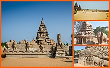
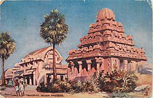
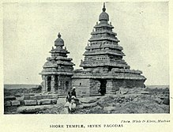
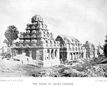
 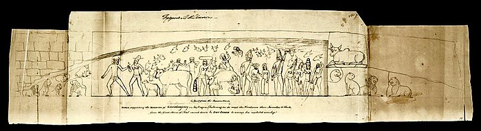
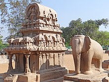
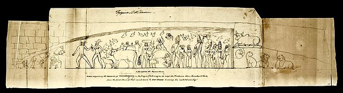
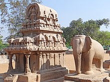
 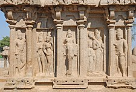
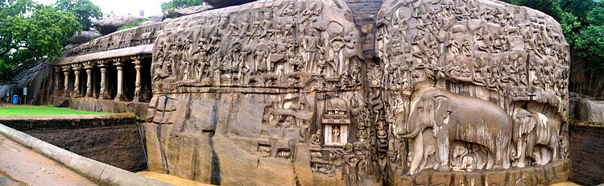
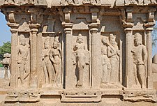
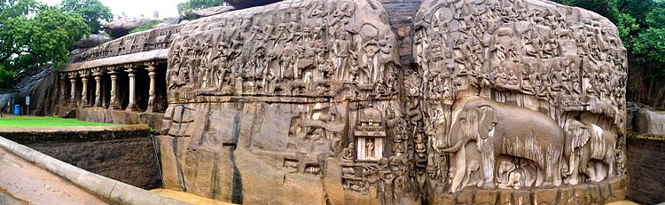
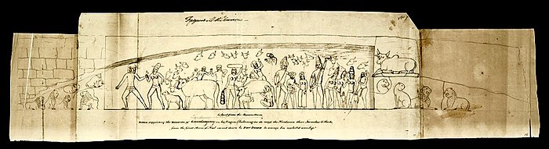
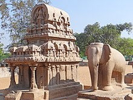
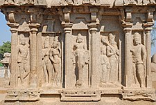
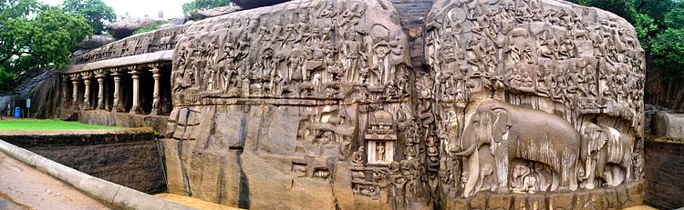
Developed By: Vineet Choudhary